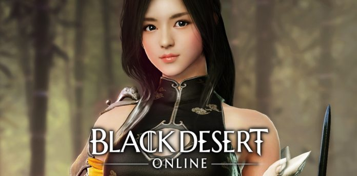
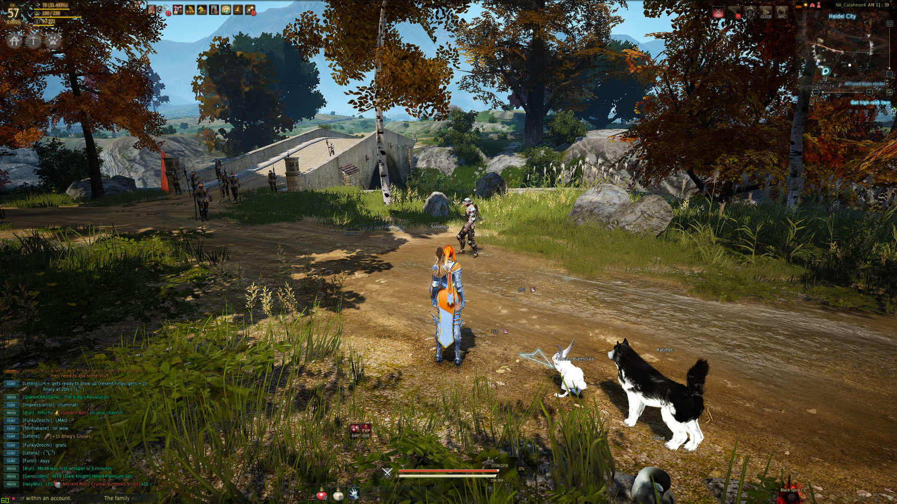

FIFTH PLACE: BLACK DESERT ONLINE
Black Desert Online is one of those games that used its hype to generate its initial player base. Created and first released in Korea, it was known as THE game for players who enjoy a grind (Korean gaming culture revolves around grinding for progression). The game has an uncapped level feature that allows players the potential to continue gaining stats and strength without a hard cap, although it gets exponentially harder to level as you progress through the contents. BDO is considered a sand-box MMORPG in that the player is free to choose to do whatever they desire, and with the added combat system where dodging and aiming is all done manually, one can see the type of playerbase this MMORPG will attract. Something to note however is that BDO uses a different payment model depending on the game's region. In Asia, BDO follows a free to play with microtransactions model, while its NA servers follow a buy to play model. While the game is unique in its combat and content delivery, a lack of serious content updates is worrying for the game's future.
Details:
Release Year: 2016 in NA
Payment Model: Buy to Play
Latest Expansion Date: June 2016
Next Expansion Date: N/A
Total Accounts Created: Over 3 Million
Current Active Playerbase: Around 75 000
Company: Pearl Abyss
Release Year: 2016 in NA
Payment Model: Buy to Play
Latest Expansion Date: June 2016
Next Expansion Date: N/A
Total Accounts Created: Over 3 Million
Current Active Playerbase: Around 75 000
Company: Pearl Abyss

Rankings: